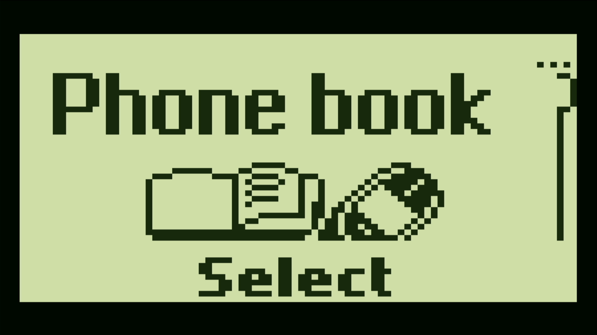
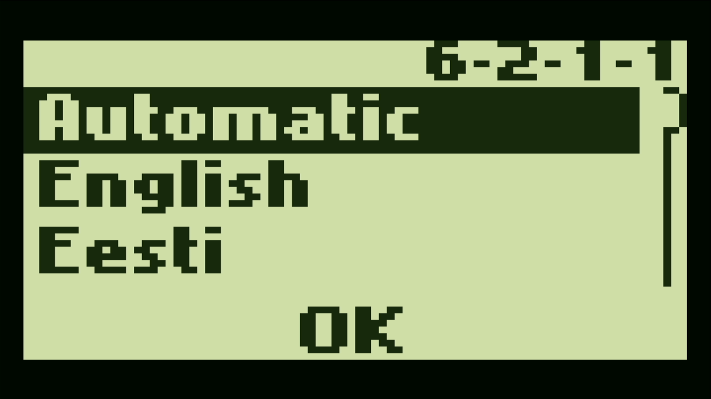
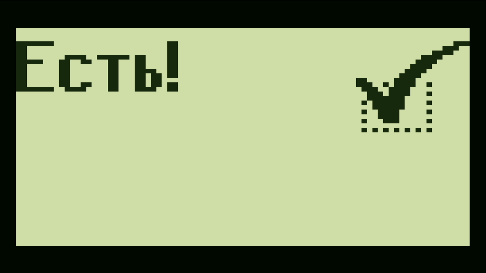

Original menus and languages
v5.79 and v6.39 have booted on the FPGA. Phonebook, Settings, language selection and applying Russian are confirmed by HDMI captures.
FPGA · WORK IN PROGRESS
Original Nokia firmware on the Tang Nano 20K. The familiar monochrome display, real ARM code, HDMI and a pocket-sized LCD.

ORIGINAL ROM
The FPGA executes the firmware’s ARM/Thumb code. A PCD8544 model receives its commands and shares one 84 × 48 framebuffer between both display outputs.


VERIFIED / IN PROGRESS · OCTOBER 28, 2026
v5.79 and v6.39 have booted on the FPGA. Phonebook, Settings, language selection and applying Russian are confirmed by HDMI captures.
The original ROM has exchanged over 120 commands with the virtual SIM on hardware. Sustained operation and games still need verification.
The real pad responds with ID 0x41. Opening menus, scrolling and returning with Circle, D-pad and Cross are confirmed on the full phone build.
A virtual outgoing call has been exercised in simulation. Network-enabled FPGA placement, voice and SMS remain incomplete; there is no physical GSM radio.
INTERACTIVE DISPLAY LAB
Explore the original 84 × 48 pixel canvas and switch its palette. This is an illustrative browser demo, separate from the running FPGA.
The board can mirror its framebuffer to HDMI and the ST7735S module. Physical panel output is still awaiting verification.
UNDER THE HOOD
The original firmware runs on the FPGA CPU and talks to modeled phone hardware.
Virtual SIM, keypad, display controller and an experimental network connect to the emulated bus.
One 84 × 48 image feeds the HDMI output, the small panel and remote applications.
TANG NANO 20K
HDMI
720 × 480 output. The LCD is scaled 8× to 672 × 384, preserving every pixel.
128²
The 128 × 128 module used by Open Pocket GBC. The 84 × 48 framebuffer is centered. The panel is connected; its output still needs verification.
Tang Nano 20K · GW2AR-18 · embedded SDRAM · W25Q64 SPI flash. Display and controller adapter pin assignments follow Open Pocket GBC.
DUALSHOCK 2
Physical menu navigation is verified on the full FPGA build. The controller feeds the original Nokia key matrix, including a numeric layer for entering digits.
CLK 17 · CS 18 · MISO 19 · MOSI 20.
FPGA package pin numbers, as defined in the CST.
| Controller | Nokia |
|---|---|
| D-pad ↑ / ↓ | Scroll |
| ○ | Menu / Select / OK |
| ✕ | C / Back |
| Start | Power |
| Hold L1 | Numeric layer |
OPEN-SOURCE TOOLCHAIN
Yosys + Slang, nextpnr, Apicula and Verilator. RTL sources, tests and tools are included in the repository.
git clone https://github.com/LakoMoor/OpenNokia3310
cd OpenNokia3310
python tools/test.py
python tools/build.py nokia_top
# Load FPGA configuration into SRAM
openFPGALoader -b tangnano20k \
build/nokia_top_lut4/nokia_top.fsThe FPGA configuration and ROM can both live in SPI flash for standalone startup. Saving changed settings from SDRAM is not implemented yet; language changes are lost after a restart.